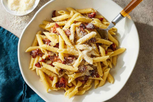

Cheesy Beef Pasta Bake
with tomato sauce and spinach
Ingredients
- 227g Ground Beef
- 170g Penne
- 56g Baby Spinach
- 5g Italian Herb Spice Blend
- 1/2 cup Marinara Sauce
- 3/4 cup Mozarella Cheese, shredded
- 10g Cream Sauce Spice Belnd
- 1 Yellow Onion
- Cooking Oil
- Butter
- Salt & Pepper
Instructions
Cook Penne:
- Preheat broiler to high. Bring a large pot of salted water to a boil
- Wash and dry produce
- To boiling water, add penne
- Cook for 10 - 12 min, until tender but still firm to the bite
- Reserve 1 cup pasta water
- Strain penne, then return to the same pot, off heat
Prep Veggies:
- Meanwhile, peel, then cut onion into 1/2-inch pieces
- Roughly chop spinach
Cook Beef and Onions:
- In a large non-stick pan, heat 1 tsp oil over medium-high
- When pan is hot, add onions and beef
- Cook for 3-5 min, breaking up beef into smaller pieces, until no pink remains
- Drain and discard excess fat
- Season with salt and pepper
Make Tomato Sauce:
- To pan with beef, add Italian Herb Spice Blend and Cream Sauce Spice Blend
- Cook for 30 sec, stirring often, until fragrant
- Add marinara sauce and reserved pasta water
- Bring to boil over high
- Once boiling, reduce heat to medium and cook for 3-5 min, stirring occasionally, until slightly thickened
- Season with pepper
Assemble and Broil Pasta:
- Grease an 8x8-inch baking dish
- To pot with penne, add sauce, spinach, half the cheese, and 1 tbsp butter. Stir until spinach wilts
- Transfer pasta to the prepared baking dish
- Sprinkle remaing cheese over top
- Broil in the middle of oven for 1-3 min, until cheese is melted and golden
Plate and Serve:
- Divide pasta bake between plates